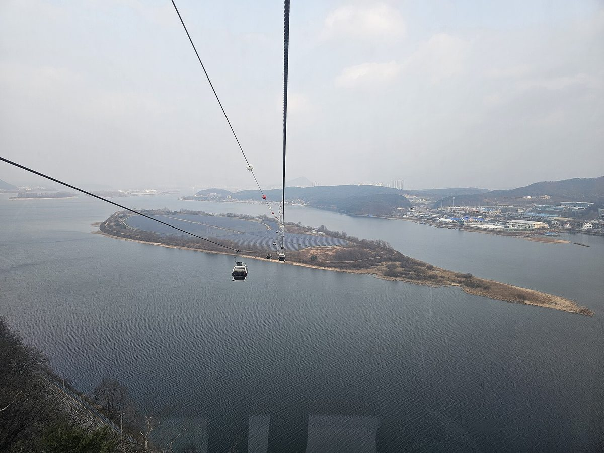

춘천 오탄1리, 협동조합 꾸려 햇빛소득마을 3차 공모 신청…주민 82% 동의, 999.75kW 태양광에 13억1,000만 원

마을규약상 주민 149명 중 123명 동의로 필수 기준 70% 넘겨…같은 사북면 오탄2리는 1차에 조건부 선정, 결과는 12월 말 발표
강원 춘천시 사북면 오탄1리가 주민 협동조합을 꾸려 행정안전부의 '2026년 햇빛소득마을' 3차 공모에 사업을 신청했다. 춘천시는 지난달 30일 오탄1리 햇빛소득마을 조성사업 신청 서류를 행정안전부에 냈으며, 선정 여부는 12월 말 발표된다. 마을은 10월 21일 '오탄1리 햇빛소득마을 협동조합' 설립 인가를 받았고, 마을규약상 주민 149명 가운데 123명, 약 82%의 동의를 모아 공모 필수 기준인 70%를 넘겼다. 신청한 사업은 총사업비 약 13억1,000만 원으로 999.75kW 규모의 지상형 태양광 발전시설을 짓는 것으로, 주민이 협동조합을 통해 운영에 참여하고 수익은 주민 소득과 마을 복지사업 등에 쓰는 방식이다. 공모에 선정된 마을은 설치비의 최대 85%까지 정부 정책융자를 신청할 수 있고 요건을 채우면 신재생에너지 공급인증서(REC) 추가 가중치 등을 받을 수 있다. 춘천에서는 앞서 1차 공모에서 같은 사북면의 오탄2리가, 2차 공모에서 서면 신매1리·서상2리·안보2리가 조건부 선정됐으며, 시는 정부의 가상발전소(VPP) 방식 에너지저장장치(ESS) 설치 지원계획 등을 신청 마을에 안내하고 발전사업 허가 등 인허가와 공모 보완사항 이행을 돕겠다고 밝혔다.
시민에너지 관점
덴마크 삼쇠섬은 농민과 주민이 섬의 풍력 터빈을 함께 소유하면서 마을 사람들이 발전소의 주인이 된 사례로 널리 알려져 있는데, 그 출발점도 마을 단위로 모인 주민의 동의와 출자였다. 오탄1리가 협동조합 인가를 받고 주민 열 명 가운데 여덟 명의 동의를 모은 것은 바로 그 출발점을 갖춘 것이고, 같은 면의 오탄2리에 이어 한 지역에서 마을 단위 발전소가 늘어나는 흐름이기도 하다. 설치비 대부분을 융자로 채우면 마을이 빚을 떠안는다는 걱정이 있지만, 그 빚은 마을 발전소가 파는 전기로 갚는 구조이고 갚고 난 뒤 수익은 외지 사업자가 아니라 주민과 마을 복지로 남는다. 정부는 3차 공모 심사에서 주민 동의율과 협동조합 운영 역량을 무겁게 보고, 선정 뒤 인허가와 계통 접속이 늦어지지 않도록 마을을 끝까지 도와야 한다.
출처: 경기뉴스원 2026-11-03 유형수 기자 원문 보기
출처: 춘천MBC 2026-11-03 이송미 원문 보기
春川・梧灘1里、協同組合を設立し「日差し所得村」第3次公募に申請…住民82%が同意、999.75kWの太陽光に13億1,000万ウォン
村の規約上の住民149人のうち123人が同意し必須基準の70%を上回る…同じ史北面の梧灘2里は第1次で条件付き選定、結果は12月末に発表
韓国江原道春川市史北面の梧灘1里（オタン1里）が住民協同組合を立ち上げ、行政安全部の「2026年 日差し所得村（ヘッピッ・ソドゥク・マウル）」第3次公募に事業を申請した。春川市は先月30日、梧灘1里の日差し所得村造成事業の申請書類を行政安全部に提出し、選定の可否は12月末に発表される。村は10月21日に「梧灘1里日差し所得村協同組合」の設立認可を受け、村の規約上の住民149人のうち123人、約82%の同意を集めて公募の必須基準である70%を上回った。申請した事業は総事業費約13億1,000万ウォンで999.75kW規模の地上設置型太陽光発電施設を建てるもので、住民が協同組合を通じて運営に参加し、収益は住民の所得や村の福祉事業などに充てる。公募に選ばれた村は設置費の最大85%まで政府の政策融資を申請でき、要件を満たせば再生可能エネルギー供給認証書（REC）の追加加重値などを受けられる。春川ではこれまでに第1次公募で同じ史北面の梧灘2里が、第2次公募で西面の新梅1里・西上2里・安保2里が条件付きで選定されており、市は政府の仮想発電所（VPP）方式によるエネルギー貯蔵装置（ESS）設置支援計画などを申請村に案内し、発電事業許可などの許認可や公募の補完事項の履行を支援するとしている。
市民エネルギーの視点
デンマークのサムソ島は、農家と住民が島の風力タービンを共同で所有し、村の人々が発電所の持ち主になった例として広く知られているが、その出発点も村単位で集まった住民の同意と出資だった。梧灘1里が協同組合の認可を受け、住民10人のうち8人の同意を集めたことは、まさにその出発点を整えたことであり、同じ面の梧灘2里に続いて一つの地域で村単位の発電所が増えていく流れでもある。設置費の大半を融資で賄えば村が借金を抱えるとの懸念もあるが、その借金は村の発電所が売る電気で返す仕組みであり、返済後の収益は外部の事業者ではなく住民と村の福祉に残る。政府は第3次公募の審査で住民の同意率と協同組合の運営力を重く見て、選定後も許認可や系統接続が遅れないよう村を最後まで支えるべきだ。
出典: 京畿ニュースワン 2026-11-03 ユ・ヒョンス記者 原文を読む
出典: 春川MBC 2026-11-03 イ・ソンミ 原文を読む
春川梧滩1里组建合作社申请"阳光收入村"第三轮公募…82%居民同意，13.1亿韩元建999.75kW光伏
按村规约计的149名居民中123人同意，超过70%的必备标准…同属史北面的梧滩2里在第一轮获有条件入选，结果12月底公布
韩国江原道春川市史北面梧滩1里组建居民合作社，向行政安全部"2026年阳光收入村"第三轮公募提交了项目申请。春川市上月30日向行政安全部递交了梧滩1里阳光收入村建设项目的申请材料，是否入选将于12月底公布。该村10月21日获得"梧滩1里阳光收入村合作社"的设立许可，并在村规约所定的149名居民中取得123人、约82%的同意，超过公募必备标准70%。所申请的项目总投资约13.1亿韩元，建设规模999.75kW的地面光伏电站，由居民通过合作社参与运营，收益用于居民增收和村庄福利事业等。入选公募的村庄可就最多85%的安装费用申请政府政策性贷款，满足条件还可获得可再生能源供应证书（REC）追加权重等优惠。此前春川已有同属史北面的梧滩2里在第一轮公募、西面的新梅1里、西上2里和安保2里在第二轮公募获得有条件入选；市政府表示，将向申请村庄介绍政府以虚拟电厂（VPP）方式支持安装储能装置（ESS）的计划等，并协助办理发电业务许可等审批手续和落实公募补充事项。
市民能源视角
丹麦萨姆索岛因农民和居民共同拥有岛上风机、村民成为电站主人而广为人知，而它的起点同样是以村为单位聚集起来的居民同意与出资。梧滩1里获得合作社许可、十位居民中有八位表示同意，正是具备了这样的起点，这也是继同一面的梧滩2里之后，一个地区里村级电站逐渐增多的趋势。有人担心安装费大部分靠贷款会让村庄背上债务，但这笔债是用村电站卖电的收入来偿还的，还清之后的收益留给居民和村庄福利，而不是外地开发商。政府在第三轮公募评审中应看重居民同意率和合作社的运营能力，入选之后也要全程帮助村庄，避免审批和并网拖延。
来源: 京畿新闻1 2026-11-03 记者 Yoo Hyung-soo（유형수） 查看原文
来源: 春川MBC 2026-11-03 Lee Song-mi（이송미） 查看原文
Chuncheon's Otan 1-ri forms a co-operative and applies for the third round of the "Sunlight Income Village" scheme, with 82% of residents in favour of a 999.75kW, 1.31 billion won solar plant
123 of the 149 residents counted under the village bylaws agreed, clearing the 70% threshold; neighbouring Otan 2-ri in the same township was conditionally selected in round one, and results are due at the end of December
Otan 1-ri, a village in Sabuk-myeon township, Chuncheon, Gangwon Province, has set up a residents' co-operative and applied to the Ministry of the Interior and Safety's third call for the 2026 "Sunlight Income Village" (Haetbit Sodeuk Maeul) programme. Chuncheon City submitted the village's application to the ministry on 30 October, and the selection result will be announced at the end of December. The village obtained approval to establish the "Otan 1-ri Sunlight Income Village Co-operative" on 21 October and gathered the consent of 123 of the 149 residents counted under its village bylaws, about 82%, above the programme's mandatory 70% threshold. The project it has applied for is a 999.75kW ground-mounted solar plant with a total cost of about 1.31 billion won, in which residents take part in running the plant through the co-operative and use the income for residents' earnings and village welfare projects. Villages selected under the programme can apply for government policy loans covering up to 85% of installation costs and, if they meet the requirements, can receive extra weighting on renewable energy certificates (RECs) and other benefits. In Chuncheon, Otan 2-ri in the same township was conditionally selected in the first round, and Sinmae 1-ri, Seosang 2-ri and Anbo 2-ri in Seo-myeon in the second; the city says it will brief applicant villages on support plans such as the government's virtual power plant (VPP)-based energy storage (ESS) installation scheme and help them through generation licensing and other permits and any supplementary requirements.
Citizen Energy View
Denmark's Samsø island is widely known as a place where farmers and residents jointly own the island's wind turbines and villagers became the owners of their power plants, and its starting point, too, was the consent and investment of residents organised village by village. By securing approval for its co-operative and the agreement of eight in ten residents, Otan 1-ri has put that starting point in place, and following Otan 2-ri in the same township, it shows village-scale plants multiplying within one area. Some worry that financing most of the installation through loans saddles a village with debt, but that debt is repaid from the electricity the village plant sells, and once it is paid off the income stays with residents and village welfare rather than an outside developer. In judging the third round, the government should weigh residents' consent and the co-operative's capacity to run the plant heavily, and after selection it should stay with villages all the way so that permits and grid connection are not delayed.
Source: GGNews1 2026-11-03 Yoo Hyung-soo Read the original
Source: Chuncheon MBC 2026-11-03 Lee Song-mi Read the original